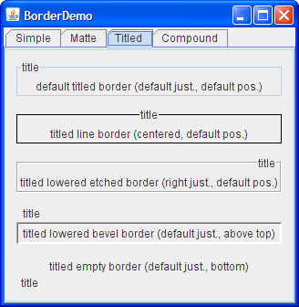
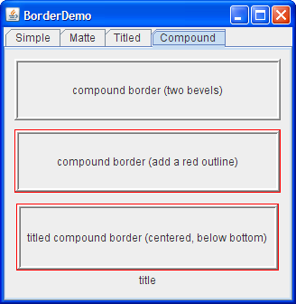

Lección: Usando Componentes Swing
Cómo Usar Bordes
Cada JComponent puede tener uno o más bordes. Los bordes son objetos increiblemente útiles que,
mientras no son en sí mismo componentes, saben como dibujar los márgenes de los componentes Swing. Los bordes
son útiles no sólo para dibujar lineas y márgenes caprichosos, sino que también suministran títulos y un
espacio vacío entre los componentes.
Nota:
Nuestros ejemplos establecen bordes sobre JPanels, JLabels, y subclases
personalizadas de JComponent. Aunque técnicamente puede establecer el borde sobre cualquier
objeto que hereda de JComponent, la implementación del aspecto de muchos componentes estándar
de Swing no funcionan bien con bordes establecidos por el usuario. En general, cuando quiere establecer el
borde de un componente estándar de Swing distinto a un JPanel o un JLabel,
recomendamos que coloque el componente en un JPanel y establezca el borde sobre el
JPanel.
Para colocar un borde alrededor de un JComponent, use sus métodos setBorder. Puede
usar la clase
BorderFactory para crear la mayoría de los bordes que Swing ofrece. Si necesita una
referencia a un borde ─ digamos, porque quiere usarlo en múltiples componentes
─ puede salvarlo en una variable de tipo
Border.
Aquí tiene un ejemplo de código que crea un contenedor con bordes:
JPanel pane = new JPanel();
pane.setBorder(BorderFactory.createLineBorder(Color.black));
Aquí tiene una foto del contenedor, que contiene un componente etiqueta. La línea negra dibujada por el borde marca el límite del contenedor.

El resto de esta página describe los siguientes temas:
- El Ejemplo BorderDemo
- Usar los Bordes Ofrecidos por Swing
- Crear Bordes Personalizados
- La IPA del Borde
- Ejemplos que Usan Bordes
El Ejemplo BorderDemo
Las siguientes imágenes muestran una aplicación llamada BorderDemo que visualiza los bordes que
Swing suministra. Mostramos el código para crear estos bordes un poco más tarde en
Usar los Bordes Ofrecidos por Swing.
Pulse el botón Lanzar para ejecutar el ejemplo BorderDemo usando Java™ Web Start ( descargue KDJ 7 o posterior). Alternativamente, para compilar y ejecutar usted mismo el ejemplo, consulte el índice de ejemplos.

La siguiente imagen muestra algunos bordes mate. Cuando crea un borde mate, especifica cuantos pixeles ocupan en la parte superior, izquierda, inferior y derecha de un componente. Después especifica un color o un icono para el borde mate a dibujar. Necesita ser cuidadoso cuando selecciona el icono y determinar el tamaño de su componente; de otra forma, el icono podría cortarse o no coincidir en las esquinas del componente.

La siguiente imagen muestra bordes titulados. Usando un borde titulado, puede convertir cualqueir borde en uno que visualiza una descripción de texto. Si no especifica un borde, un borde específico del aspecto será usada. Por ejemplo, el borde titulado por defecto en el aspecto Java usa una línea gris, y el borde titulado por defecto en el aspecto Windows usa un borde grabado. Por defecto, el título se extiende a la izquierda del borde, como se muestra en la parte superior de la siguiente figura.

La siguiente imagen muestra bordes compuestos. Con los bordes compuestos, puede combinar dos bordes, los cuales a su vez pueden ser bordes compuestos.

Usar los Bordes Ofrecidos por Swing
El código que sigue muestra cómo crear y establecer los bordes que vio en las figuras precedentes. Puede
encontrar el código del programa en
BorderDemo.java
.
//Mantiene referencias a los pocos bordes siguientes,
//para usarlos en títulos y bordes compuestos.
Border blackline, raisedetched, loweredetched,
raisedbevel, loweredbevel, empty;
blackline = BorderFactory.createLineBorder(Color.black);
raisedetched = BorderFactory.createEtchedBorder(EtchedBorder.RAISED);
loweredetched = BorderFactory.createEtchedBorder(EtchedBorder.LOWERED);
raisedbevel = BorderFactory.createRaisedBevelBorder();
loweredbevel = BorderFactory.createLoweredBevelBorder();
empty = BorderFactory.createEmptyBorder();
//Bordes simples
jComp1.setBorder(blackline);
jComp2.setBorder(raisedbevel);
jComp3.setBorder(loweredbevel);
jComp4.setBorder(empty);
//Bordes mate
ImageIcon icon = createImageIcon("images/wavy.gif",
"wavy-line border icon"); //20x22
jComp5.setBorder(BorderFactory.createMatteBorder(
-1, -1, -1, -1, icon));
jComp6.setBorder(BorderFactory.createMatteBorder(
1, 5, 1, 1, Color.red));
jComp7.setBorder(BorderFactory.createMatteBorder(
0, 20, 0, 0, icon));
//Bordes titulados
TitledBorder title;
title = BorderFactory.createTitledBorder("title");
jComp8.setBorder(title);
title = BorderFactory.createTitledBorder(
blackline, "título");
title.setTitleJustification(TitledBorder.CENTER);
jComp9.setBorder(title);
title = BorderFactory.createTitledBorder(
loweredetched, "título");
title.setTitleJustification(TitledBorder.RIGHT);
jComp10.setBorder(title);
title = BorderFactory.createTitledBorder(
loweredbevel, "título");
title.setTitlePosition(TitledBorder.ABOVE_TOP);
jComp11.setBorder(title);
title = BorderFactory.createTitledBorder(
empty, "título");
title.setTitlePosition(TitledBorder.BOTTOM);
jComp12.setBorder(title);
//Bordes compuestos
Border compound;
Border redline = BorderFactory.createLineBorder(Color.red);
//Esto cra un bonito marco.
compound = BorderFactory.createCompoundBorder(
raisedbevel, loweredbevel);
jComp13.setBorder(compound);
//Agrega un contorno rojo al marco.
compound = BorderFactory.createCompoundBorder(
redline, compound);
jComp14.setBorder(compound);
//Agrega un título al marco con el contorno rojo.
compound = BorderFactory.createTitledBorder(
compound, "título",
TitledBorder.CENTER,
TitledBorder.BELOW_BOTTOM);
jComp15.setBorder(compound);
Como probablemente notó, el código usa la clase BorderFactory para crear cada borde. La clase
BorderFactory, que está en el paquete javax.swing, devuelve objetos que implementan
la interfaz
Border.
La interfaz Border, así como sus implementaciones proporcionadas por Swing, están en el paquete
javax.swing.border. A menudo no necesita usar directamente ninguna en el paquete border,
excepto cuando especifica constantes que son específicas a una clase particular de borde o cuando se
refiera al tipo Border.
Crear Bordes Personalizados
Si BorderFactory no le ofrece el control suficiente sobre una forma de borde, entonces podría
necesitar usar directamnte la IPA en el paquete border — o incluso definir su propio borde. Además de
contener el interfaz Border, el paquete border contiene las clases que implementan los bordes
que ya ha visto:
LineBorder,
EtchedBorder,
BevelBorder,
EmptyBorder,
MatteBorder,
TitledBorder, y
CompoundBorder. El paquete border también contiene una clase llamada
SoftBevelBorder, que produce un resultado similar a BevelBorder, pero con
bordes más suaves.
Si ninguno de los bordes de Swing es adecuado, puede implementar su propio borde. Generalmente, hace esto
creando una subclase de la clase
AbstractBorder. En su subclase, debe implementar al menos un constructor y los dos métodos
siguientes:
-
paintBorder, la cual contiene el código de dibujo que unJComponentejecuta para dibujar el borde. -
getBorderInsets, la cual especifica la cantidad de espacio que el borde necesita para dibujarse a sí mismo.
Si un borde personalizado tiene inserciones (y típicamente tienen inserciones) necesita sobreescribir ambos
AbstractBorder.getBorderInsets(Component c) y
AbstractBorder.getBorderInsets(Component c, Insets insets) para suministrar las
inserciones correctas.
Para más ejemplos de implementación de bordes, vea el código fuente de las clases en el paquete
javax.swing.border.
La IPA del Borde
Las siguientes tablas listan los métodos comunmente usados del borde. La IPA para usar bordes se divide en estas dos categorías:
| Método | Propósito |
|---|---|
|
Border createLineBorder(Color)
Border createLineBorder(Color, int) |
Crea un borde de línea. El primer argumento es un objeto java.awt.Color que especifica el
color de la línea. El segundo argumento opcional especifica el ancho en pixeles de la línea.
|
|
Border createEtchedBorder()
Border createEtchedBorder(Color, Color) Border createEtchedBorder(int) Border createEtchedBorder(int, Color, Color) |
Crea un borde grabado. Los argumentos opcionales Color especifican los colores de
resaltado y sombra a ser usados. Los métodos con argumentos int permiten a los métodos de
borde ser especificados o como EtchedBorder.RAISED o EtchedBorder.LOWERED.
Los métodos sin los argumentos int crean un borde grabado rebajado.
|
| Border createLoweredBevelBorder() | Crea un borde que da la ilusión de que el componente es más bajo que el área circundante. |
| Border createRaisedBevelBorder() | Crea un borde que da la ilusión de que el componente es más alto que el área circundante. |
|
Border createBevelBorder(int, Color, Color) Border createBevelBorder(int, Color, Color, Color, Color) |
Crea un borde biselado elevado o rebajado, especificando los colores a usar. El argumento entero puede
ser o BevelBorder.RAISED o BevelBorder.LOWERED. Con el constructor de
tres argumentos, especifica los colores de resaltado y de sombra.Con el constructor de cinco
argumentos, especifica el resaltado de los colores de resaltado exterior, del resaltado interior,
de la sombra exterior, y de la sombra interior, en ese orden.
|
|
Border createEmptyBorder()
Border createEmptyBorder(int, int, int, int) |
Crea un borde invisible. Si no especifica argumentos, entonces el borde no ocupa espacio, lo cual es útil cuando crea un borde titulado sin límite visible. Los argumentos opcionales especifican el número de píxeles que el borde ocupa en la parte superior, izquierda, inferior, y derecha (en ese orden) de cualquier componente que lo use. Este método es útil para colocar espacio vacío alrededor de sus componentes. |
|
MatteBorder createMatteBorder(int, int, int, int, Color)
MatteBorder createMatteBorder(int, int, int, int, Icon) |
Crea un borde mate. Los argumentos enteros especifican el número de píxeles que el borde ocupa en la parte superior, izquierda, inferior, y derecha (en ese orden) de cualquier componente que lo use. El argumento color especifica el color con el que el borde debe rellenar su área. El argumento icono especifica el icono con el que el borde debe embaldosar su área. |
|
TitledBorder createTitledBorder(String)
TitledBorder createTitledBorder(Border) TitledBorder createTitledBorder(Border, String) TitledBorder createTitledBorder(Border, String, int, int) TitledBorder createTitledBorder(Border, String, int, int, Font) TitledBorder createTitledBorder(Border, String, int, int, Font, Color) |
Crea un borde titulado. El argumento string especifica el título que se muestra. Los argumentos
opcionales de fuente y color especifican la fuente y el color a usarse por el texto del título. El
argumento borde especifica el borde que debe ser visualizado junto con el título. Si no se especifica
un borde, entonces se usa un borde específico por defecto del aspecto.
Por defecto, el título se extiende en la parte superior de su borde acompañante y se justifica a la
izquierda. Los argumentos opcionales enteros especifican la posición del título y la justificación,
en ese orden.
|
|
CompoundBorder createCompoundBorder(Border, Border) |
Combina dos bordes en uno. El primer argumento especifica el borde más externo; el segundo el borde más interno. |
| Método | Propósito |
|---|---|
|
void setBorder(Border)
Border getBorder() |
Establece u obtiene el borde del JComponent que lo recibe.
|
|
void setBorderPainted(boolean)
boolean isBorderPainted() (en AbstractButton, JMenuBar, JPopupMenu,
JProgressBar, y JToolBar)
|
Establece u obtiene si el borde del componente será visualizado. |
Ejemplos que Usan Bordes
Muchos ejemplos en esta lección usan bordes. La siguiente tabla lista unos pocos casos interesantes.
| Ejemplo | Donde Se Describen | Notas |
|---|---|---|
BorderDemo
|
Esta sección |
Muestra un ejemplo de cada tipo de borde que BorderFactory puede crear. También usa un
borde vacío para añadir espacio para respirar entre cada panel y sus contenidos.
|
BoxAlignmentDemo
|
Cómo Usar BoxLayout | Usa bordes titulados. |
BoxLayoutDemo
|
Cómo Usar BoxLayout | Usa una línea roja para mostrar dónde está el límite de un contenedor, de forma que pueda ver cómo el espacio extra en un diseño box es distribuido. |
ComboBoxDemo2 |
Cómo Usar Cuadros Combinados | Usa un borde compuesto para combinar un borde de línea con un borde vacío. El borde vacío suministra espacio entre la línea y las entrañas del componente. |